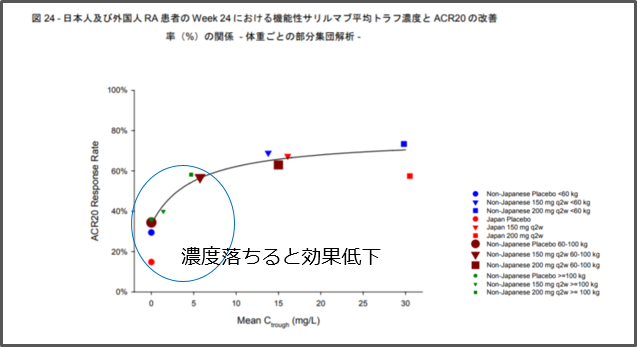

4. KEVはACTよりもIl-6受容体への親和性が高いので効果発現が早い？

確かにKd値だけで見るとKEVの方が親和性が高いようですが、同じ測定法で比較していないので、そもそも比較するのが困難です。また、IL-6Rとの占有率（薬剤が結合しているIL-6Rの割合）はKEV200mgで90％以上、ACTで1μg/mL以上で98%以上と同等です（KEVはACTのように有効血中濃度が分かりません）。また、KEVでもACT同様に血中濃度が低いPopulationでは，有効性が十分得られないことが下図から確認でき、特に100 kg以上では200 mg q2wでも十分な有効性が得られていません。ACTではこうした場合にQWのオプションがあります。

KEV承認審査資料